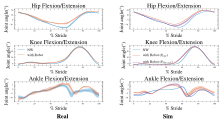

Beyond Heuristics: A Standardized Real2Sim Pipeline for Physical Human-Robot Interaction in Human-in-the-Loop Simulation
Abstract
The rapid aging of the global population necessitates scalable assistive robotics; however, development is hindered by the high safety risks and costs associated with physical testing. Human-in-the-Loop (HITL) simulation offers a safe alternative, yet existing frameworks for coupled systems (e.g., gait-assistive robots) often rely on heuristic, manually tuned interaction models that fail to capture the complex dynamics of soft interactions. To bridge this “reality gap,” this paper proposes a comprehensive Real2Sim pipeline for identifying coupled Physical Human-Robot Interaction (pHRI) dynamics. We formulate a generalized six-degrees-of-freedom (6-DoF) viscoelastic model to capture the full spatial compliance of the pelvis-strap interface. Addressing the ambiguity of harness fit across diverse anthropometrics, we employ a psychophysics-constrained optimization strategy where subjective “Safe & Comfortable” feedback serves as a prior to regularize a Covariance Matrix Adaptation Evolution Strategy (CMA-ES) identification process. Furthermore, through statistical analysis, we derive shareable parameter sets that enable rapid, zero-shot configuration for new users. Validation results demonstrate that our calibrated model significantly outperforms manual tuning, reducing trajectory tracking errors and correctly inducing biomechanically accurate gait adaptations in the Human Digital Twin. This approach significantly improves HITL simulation fidelity, thereby enabling the Human Digital Twin to serve as a valid predictive tool for accelerating the pre-clinical verification of personalized controllers.
Effect of Interaction Stiffness on Human Gait
Adjust the pHRI model parameters — slide to a setting and the matching clip plays on its own, showing how the interaction stiffness shapes the walking pattern.
Soft
Optimized
Stiff
Results

Working space validation

Gait analysis
BibTeX
@inproceedings{yang2026beyond,
author = {Yang, Chengyuan and Wang, Yifan and Tan, Chun Kwang and Chan, Sherwin Stephen and Wang, Youlong and Yan, Xiaoyue and Li, Lei and Ang, Wei Tech},
title = {Beyond Heuristics: A Standardized Real2Sim Pipeline for Physical Human-Robot Interaction in Human-in-the-Loop Simulation},
booktitle = {IEEE RAS/EMBS International Conference on Biomedical Robotics and Biomechatronics (BioRob)},
year = {2026},
}Two related works — click either card to open it